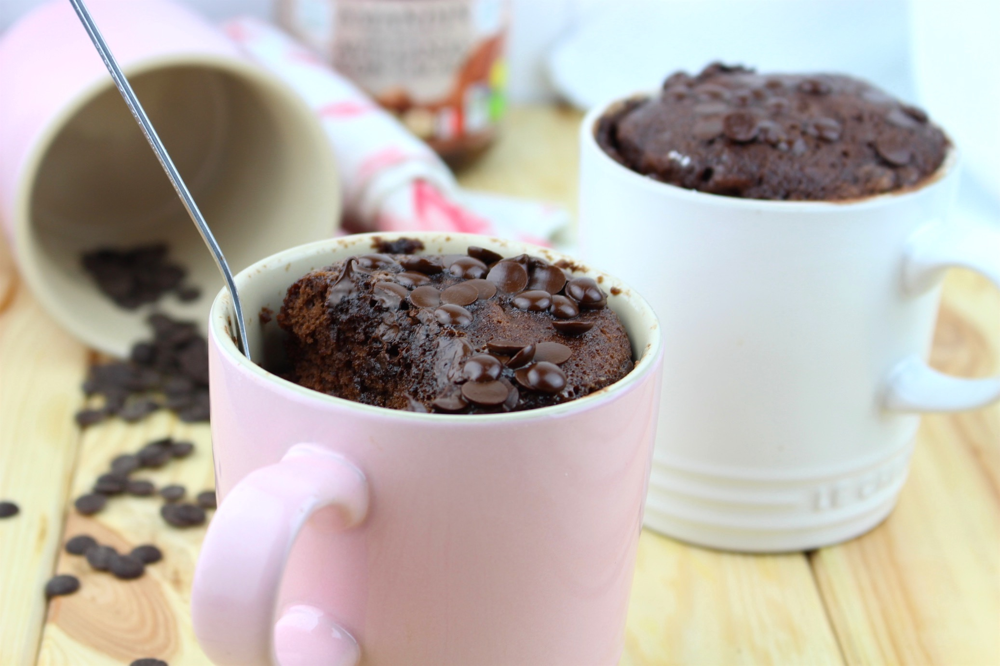

Inicio
Recetas
MugCake: Nutella (sin harina)

Preparación
Cocción
Porciones
5min
1min
1
Ingredientes
1/4 taza de Nutella
1 huevo
1/2 cda. de cacao amargo en polvo
Instrucciones
Mezclar todos los ingredientes en una taza.
Cocinar en microondas por 60 segundos.